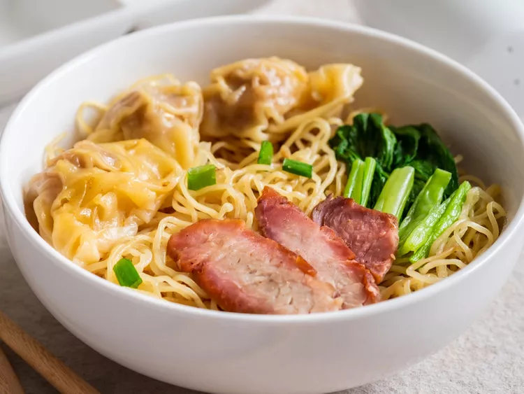

Noodle

Description
While you can use many types of noodles to make
lucky noodles (also called longevity or long life noodles),
Mama uses wonton noodles. They are thin egg-based
noodles that are often eaten dry or in soups with proteins,
greens, and wontons. The staple can be found in many
restaurants and food stalls serving Cantonese-style Chinese
cuisine, particularly in southern China, Hong Kong,
Thailand, and Singapore.
My family enjoys the noodles with wontons, blanched bok
choy or gai lan (Chinese broccoli), and a variety of
proteins (pork, chicken, and duck). While Mama makes a big
batch of barbecued char siu pork for Chinese New Year, she
gets roasted ducks from a local restaurant and heads to Costco
for rotisserie chickens and bags of Bibigo chicken and cabbage
mini wontons.
Ingredient
- 1 pound package of fresh wonton noodles
- 2 tablespoons fried garlic oil or olive oil
- 2 1/2 tablespoons soy sauce
- 2 teaspoons granulated sugar
- Blanched greens (such as bok choy or broccoli)
- Cooked frozen wontons
- Proteins of your choice (such as sliced chicken, char siu pork, or duck)
Steps
- Bring a large pot of water to boil (at least 2 quarts) on high heat.
- Unravel and loosen the noodles gently on a cutting board or plate. Be careful not to break them so they stay as long as possible.
- While the water is boiling, let the noodles cook for about 30 seconds, stirring them continuously and carefully with a pair of chopsticks or kitchen tongs.
- Strain the noodles, then transfer them to a bowl of cold water and swirl them around.
- Strain the strands again and transfer them to a large bowl. Season the noodles with the oil, soy sauce, and sugar and toss them gently.
- Serve the noodles with sliced proteins, wontons, and greens.
Home